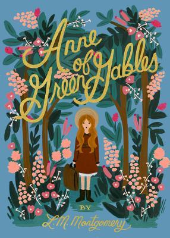

|  |
Anne of Green Gables by Lucy Maud MontgomeryThis heartwarming story has beckoned generations of readers into the special world of Green Gables, an old-fashioned farm outside a town called Avonlea. Anne Shirley, an eleven-year-old orphan, has arrived in this verdant corner of Prince Edward Island only to discover that the Cuthberts—elderly Matthew and his stern sister, Marilla—want to adopt a boy, not a feisty redheaded girl. But before they can send her back, Anne—who simply must have more scope for her imagination and a real home—wins them over completely. A much-loved classic that explores all the vulnerability, expectations, and dreams of a child growing up, Anne of Green Gables is also a wonderful portrait of a time, a place, a family… and, most of all, love. Quotes:
|